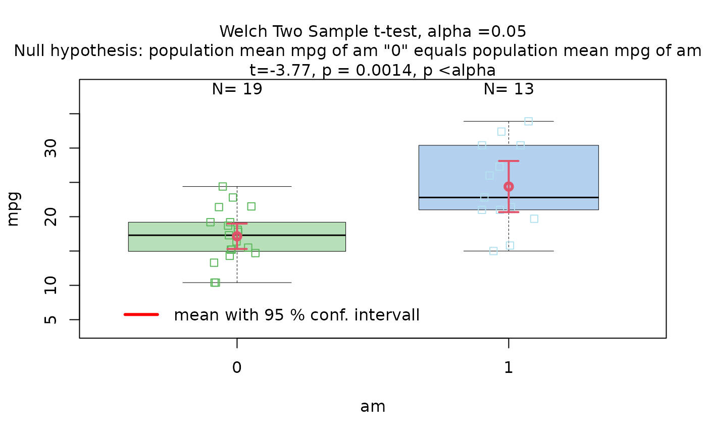
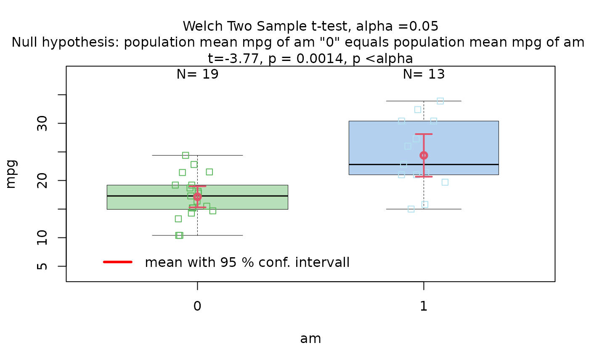
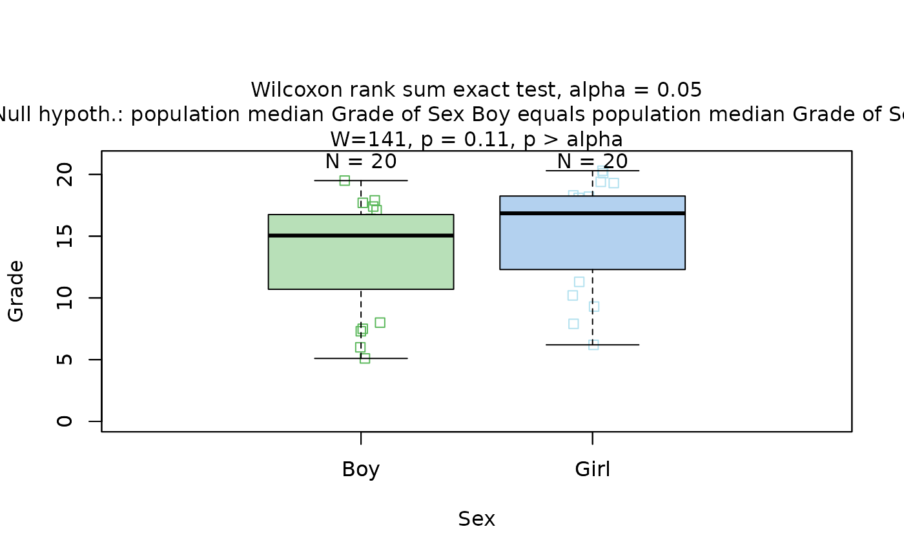
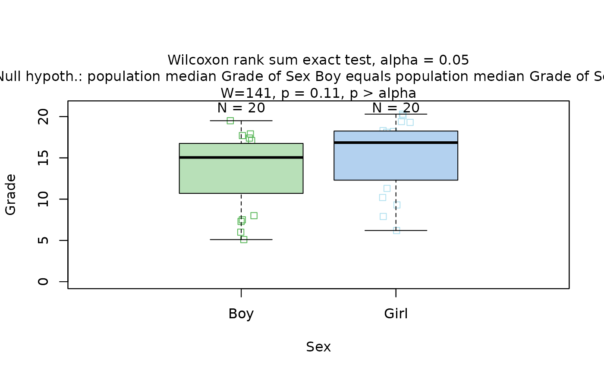
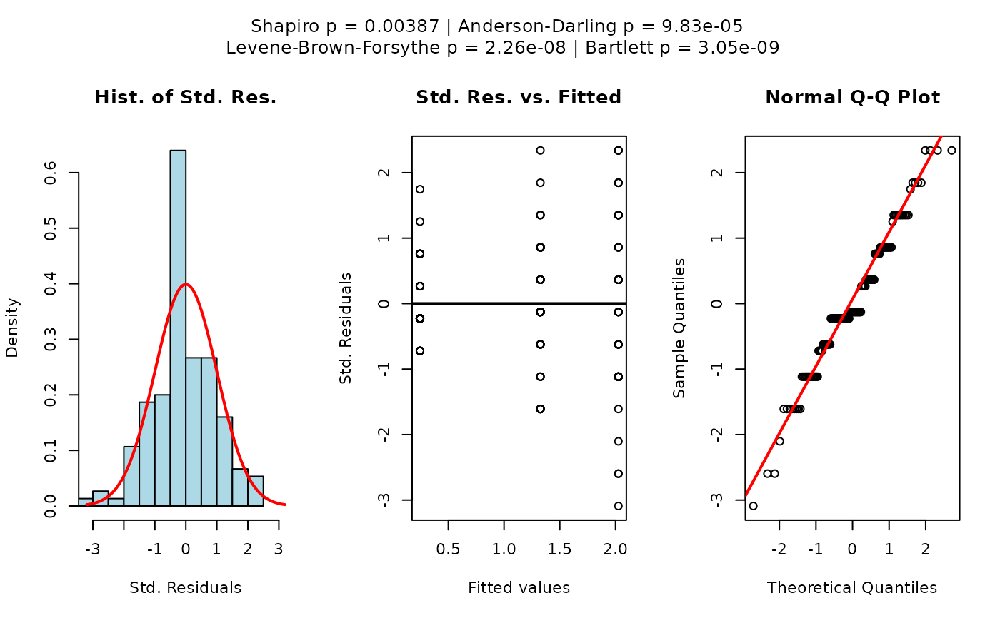
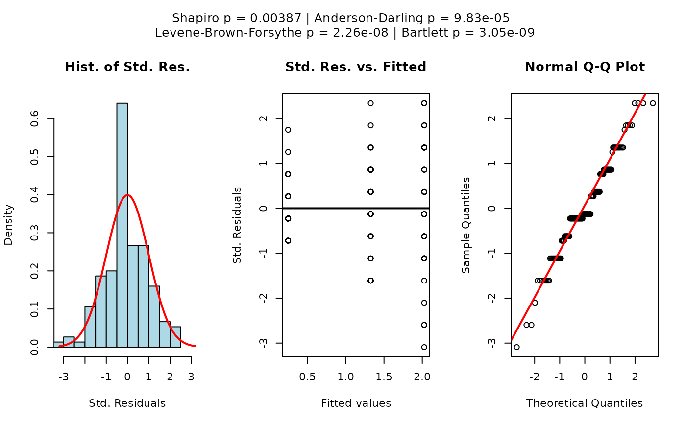
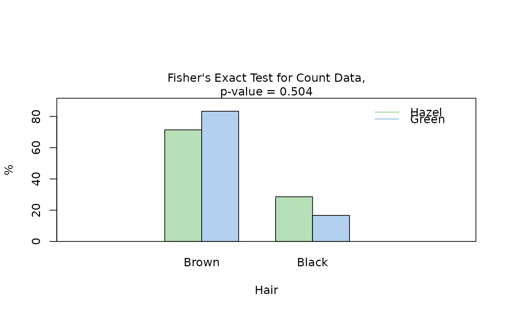
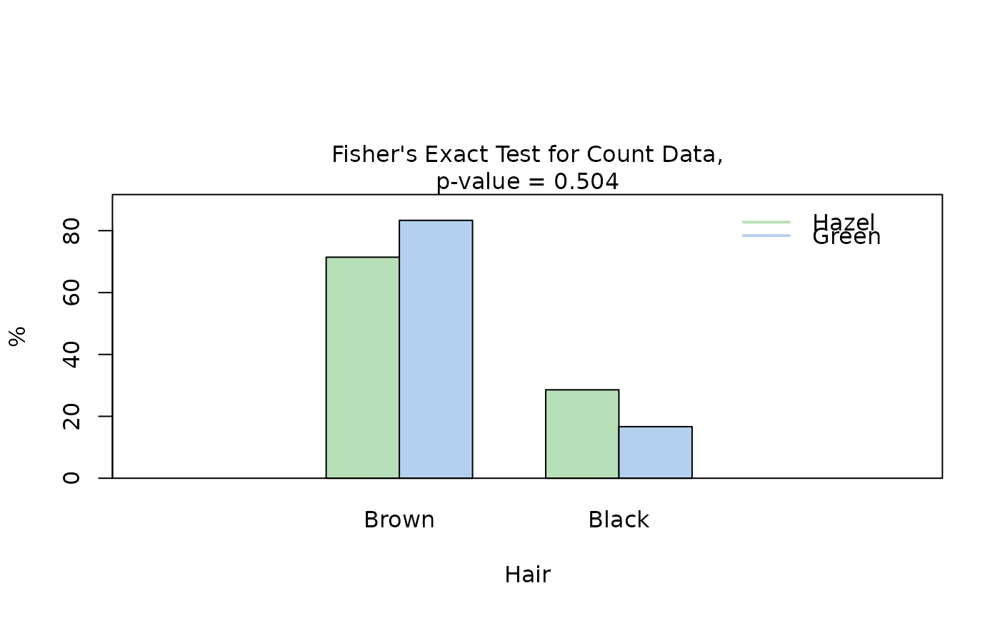

A wrapper around the core function visstat_core defining the
decision logic for statistical hypothesis testing and visualisation between
two variables of class "numeric", "integer", or "factor".
Usage
visstat(
x,
y,
...,
conf.level = 0.95,
numbers = TRUE,
minpercent = 0.05,
graphicsoutput = NULL,
plotName = NULL,
plotDirectory = getwd()
)Arguments
- x
A vector of class
"numeric","integer", or"factor"(standardised usage), or adata.framecontaining the relevant columns (backward-compatible usage).- y
A second vector (standardised usage), or a character string specifying the name of a column in
x(backward-compatible usage).- ...
If
xis a data frame andyis a character string, an additional character string must follow, naming the second column.- conf.level
Confidence level for statistical inference; default is
0.95.- numbers
Logical. Whether to annotate plots with numeric values.
- minpercent
Minimum proportion (between 0 and 1) required to display a category in plots.
- graphicsoutput
Optional. Output format for plots (e.g.,
"pdf","png").- plotName
Optional. File name prefix for saving plot output.
- plotDirectory
Directory in which to save plots; defaults to the current working directory.
Details
This wrapper supports two input formats:
Standardised form:
visstat(x, y), where bothxandyare vectors of class"numeric","integer", or"factor".Backward-compatible form:
visstat(dataframe, "name_of_y", "name_of_x"), where both character strings refer to column names indataframe. This is equivalent to:visstat(dataframe[["name_of_x"]], dataframe[["name_of_y"]]).
The interpretation of x and y depends on the variable classes:
In the following, data of class numeric or
integer are both referred to by their common mode numeric
If one variable is numeric and the other a factor, the numeric vector must be passed as
yand the factor asx. This supports tests of central tendencies (e.g., t-test, ANOVA, Wilcoxon).If both variables are numeric, a linear model is fitted with
yas the response andxas the predictor.If both variables are factors, an association test (Chi-squared or Fisher’s exact) is used. The test result is invariant to variable order, but visualisations (e.g., axis layout, bar orientation) depend on the roles of
xandy.
This wrapper standardises the input and calls visstat_core,
which selects and executes the appropriate test with visual output and
assumption diagnostics.
See also
the core function visstat_core, the package's vignette
vignette("visStatistics") for the overview,
and the accompanying webpage
https://shhschilling.github.io/visStatistics/.
Examples
## Standardised usage (preferred):
visstat(mtcars$am, mtcars$mpg)
 
## Backward-compatible usage (same result):
visstat(mtcars, "mpg", "am")

## Backward-compatible usage (same result):
visstat(mtcars, "mpg", "am")

 ## Wilcoxon rank sum test
grades_gender <- data.frame(
Sex = as.factor(c(rep("Girl", 20), rep("Boy", 20))),
Grade = c(
19.3, 18.1, 15.2, 18.3, 7.9, 6.2, 19.4, 20.3, 9.3, 11.3,
18.2, 17.5, 10.2, 20.1, 13.3, 17.2, 15.1, 16.2, 17.3, 16.5,
5.1, 15.3, 17.1, 14.8, 15.4, 14.4, 7.5, 15.5, 6.0, 17.4,
7.3, 14.3, 13.5, 8.0, 19.5, 13.4, 17.9, 17.7, 16.4, 15.6
)
)
visstat(grades_gender$Sex, grades_gender$Grade)
## Wilcoxon rank sum test
grades_gender <- data.frame(
Sex = as.factor(c(rep("Girl", 20), rep("Boy", 20))),
Grade = c(
19.3, 18.1, 15.2, 18.3, 7.9, 6.2, 19.4, 20.3, 9.3, 11.3,
18.2, 17.5, 10.2, 20.1, 13.3, 17.2, 15.1, 16.2, 17.3, 16.5,
5.1, 15.3, 17.1, 14.8, 15.4, 14.4, 7.5, 15.5, 6.0, 17.4,
7.3, 14.3, 13.5, 8.0, 19.5, 13.4, 17.9, 17.7, 16.4, 15.6
)
)
visstat(grades_gender$Sex, grades_gender$Grade)
 ## Welch's one-way ANOVA
visstat(npk$block, npk$yield)

## Kruskal-Wallis
visstat(iris$Species, iris$Petal.Width)
## Welch's one-way ANOVA
visstat(npk$block, npk$yield)

## Kruskal-Wallis
visstat(iris$Species, iris$Petal.Width)
 
## Simple linear regression
visstat(trees$Height, trees$Girth, conf.level = 0.99)

## Simple linear regression
visstat(trees$Height, trees$Girth, conf.level = 0.99)

 ## Chi-squared
HairEyeColorDataFrame <- counts_to_cases(as.data.frame(HairEyeColor))
visstat(HairEyeColorDataFrame$Eye, HairEyeColorDataFrame$Hair)
## Chi-squared
HairEyeColorDataFrame <- counts_to_cases(as.data.frame(HairEyeColor))
visstat(HairEyeColorDataFrame$Eye, HairEyeColorDataFrame$Hair)

 ## Fisher's test
HairEyeColorMaleFisher <- HairEyeColor[, , 1]
blackBrownHazelGreen <- HairEyeColorMaleFisher[1:2, 3:4]
blackBrownHazelGreen <- counts_to_cases(as.data.frame(blackBrownHazelGreen))
visstat(blackBrownHazelGreen$Eye, blackBrownHazelGreen$Hair)

## Save PNG
visstat(blackBrownHazelGreen$Hair, blackBrownHazelGreen$Eye,
graphicsoutput = "png", plotDirectory = tempdir())
## Save PDF
visstat(iris$Species, iris$Petal.Width, graphicsoutput = "pdf",
plotDirectory = tempdir())
## Custom plot name
visstat(iris$Species, iris$Petal.Width,
graphicsoutput = "pdf", plotName = "kruskal_iris", plotDirectory = tempdir())
## Fisher's test
HairEyeColorMaleFisher <- HairEyeColor[, , 1]
blackBrownHazelGreen <- HairEyeColorMaleFisher[1:2, 3:4]
blackBrownHazelGreen <- counts_to_cases(as.data.frame(blackBrownHazelGreen))
visstat(blackBrownHazelGreen$Eye, blackBrownHazelGreen$Hair)

## Save PNG
visstat(blackBrownHazelGreen$Hair, blackBrownHazelGreen$Eye,
graphicsoutput = "png", plotDirectory = tempdir())
## Save PDF
visstat(iris$Species, iris$Petal.Width, graphicsoutput = "pdf",
plotDirectory = tempdir())
## Custom plot name
visstat(iris$Species, iris$Petal.Width,
graphicsoutput = "pdf", plotName = "kruskal_iris", plotDirectory = tempdir())